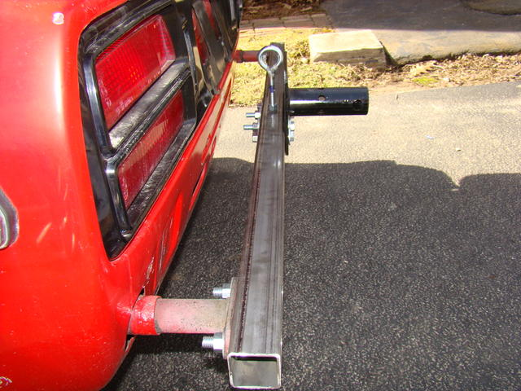
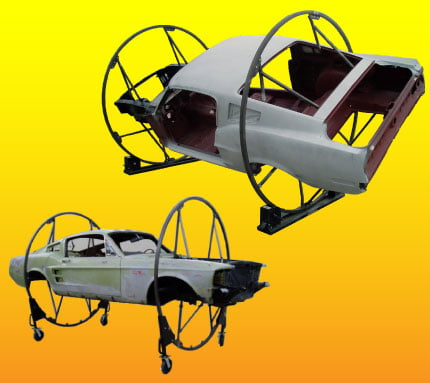

-
To restore my AE, it would be sweet to be able to de-rust and properly restore the underside without hours of laying on my back with sh!t falling all over me.
The areas that require welding would be easily accessible. Having 3 Z's needing restoration, it'd be a tool that would be
used more than once. I know this would be a big project, but a usefull one.
They are pretty simple and one could theoretically fab one with 2 off the shelf heavy duty engine stands and some square tube.
I was thinking engine stands because they have the pivot mechanism, but lack height adjustment.
The base would have extensions welded/bolted for stability.
Here is a DIY one i found: http://www.mts.net/~hpokrant/Restora…Rotisserie.htm
The question is, would the bumper mounts be sufficient supports rotating the chassis 90deg. Assuming the unibody area
for the bumper mounts are rust free. The only real rust is in the rear quarter panels and rear lower rocker panels.
The frame rails are crushed a bit beneath the footwells but still sturdy with only surface rust. Maybe i'd have to remove
the bumper mounts and make my own brackets…or just get some from the junkyard and weld them solid. ::tilt
I already have the engine and trans out, also the nose and front fenders
I think the additional things to remove would be:
F&R suspension (weight)
fuel tank (obvious spillage, weight)
seats (weight)
rear bumper (mounting access)
Thoughts?
84 AE/Shiro #683/Shiro #820/84 Turbo -
Re: Thoughts on putting a Z31 on a rotiserrie
My dad had a neighbor that built a rotisserie for S30's on a flat bed trailer. It could be locked stationary and had stabilizers at each corner. I think he used the rear bumper mounts to attach the rear. I don't remember how the front was attached.
Once you have a chassis stripped down to the basic shell it should only be a few hundred pounds to mounting location should not be overly critical.http://z31performance.com/forum/viewtopic.php?f=5&t=147 -
Re: Thoughts on putting a Z31 on a rotiserrie
You can buy two engine stands and some square tube stock and fab up a rotisserie for cheap.
My buddy did it for his Datsun. I will do the same when I pick up another Z.


-
Re: Thoughts on putting a Z31 on a rotiserrie
Thats exactly how i was picturing it. sweet!vagabond wrote: You can buy two engine stands and some square tube stock and fab up a rotisserie for cheap.
My buddy did it for his Datsun. I will do the same when I pick up another Z.
84 AE/Shiro #683/Shiro #820/84 Turbo -
You sir are a crazy man. That's gonna fit in your garage?Shiro #443

-
Re: Thoughts on putting a Z31 on a rotiserrie
Uh? Maybe i dont see it correctly but I dont think that z is able to completely rotate on that rotisserie. Shouldnt it be a little higher?vagabond wrote: You can buy two engine stands and some square tube stock and fab up a rotisserie for cheap.
My buddy did it for his Datsun. I will do the same when I pick up another Z.
. -
It's fine.
Do you really need it completely upside down? -
That's a very good point. I think it would fit lengthwise if i kept the stands close to the body.Rick88ss wrote: You sir are a crazy man. That's gonna fit in your garage?
I might have to crawl under the car to get to the other side though.
It might be tricky to safely jack the car up high enough to allow it to rotate 90deg.
I'd have to figure out the center of mass so once it rotates easily and doesn't "turtle"
I suck at math.
If i could rotate it 90deg, i could fit 2 Z's in my garage! That would really freak the neighbors… :-)
I bet the Japanese have already done it anyway.
84 AE/Shiro #683/Shiro #820/84 Turbo -
[quote]Z_Karma wrote:Get some super heavy duty stands and then rotate them so you can fit them in thereOriginally posted by Rick88ss ahhh what z do i want to drive today
ahhh what z do i want to drive today 
-
That would suck!vagabond wrote: It's fine.
Do you really need it completely upside down?
NO you dont.
But at least on its side would be nice, hell… if your going thru the trouble anyway.
Z_Karma wrote:
I'd have to figure out the center of mass so once it rotates easily and doesn't "turtle"
.
. -
If the car is stripped of interior and all suspension the center of mass should be pretty close to the center. It would be a real pita to find the center of mass on a car with no suspension. Definetly want both stands lined up perfectly center or you might run into some binding problems if the 2 stands are tied in together on the same frame. -
I would remove the doors and hatch also.
1988 300ZX Turbo, Shiro Special #760
1988 300ZX Turbo Automatic (wife's car)
1991 Hard-body 2WD
http://zccw.org/zccw/?page_id=1215 -
I assume youre gonna get the entire car media blasted while your doing this...... because........why wouldnt you?
. -
here's another trick.
take some steel square tubing.
notch the ends to accept round tubes going over and across the roof of the car and under and across the floor pan.
find suitable areas to bolt the cross beams to the car
weld the rounded cross beams to the notched tubing that will be about a foot away from the side of your car.
bend the round tubing so it's some what of a semi circle. put large castor wheels on the square tubing.
get 4 friends to roll the shell of the car over onto the castors, using the the rounded steel tube to edge it over and have two friends hold it on the other side.
picture this, but two half circles, one on top, one on the bottom. and make two of them to be near the front and the rear of the car… you can even make 3 to make it more sturdy in the middle to avoid chassis flex.
 -
This should give you some ideas and some parts http://www.eastwood.com/autobody/rotisserie.html
I made one like this to do my Austin Healey. http://www.eastwood.com/autobody/rotiss … inted.html
I tried the engine mount set up first. You will want to be able to raise and lower it.
I made mine for about $200 in materials from a scrap yard.
[attachment=2:faui4gzw]Austin Healey Body work 005 (Medium).jpg[/attachment:faui4gzw]
[attachment=1:faui4gzw]Austin Healey Body work 004 (Medium).jpg[/attachment:faui4gzw]
[attachment=0:faui4gzw]Austin Healey Body work 001 (Medium).jpg[/attachment:faui4gzw]
If you need any other information let me know…and how much HP do you have at 0 boost

Copyright © 2006–. All rights reserved. Privacy Policy